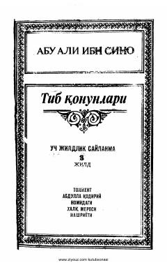

TQAbu Ali ibn Sinoning "Tib qonunlari" asarining uchinchi jildi.
Abu Ali ibn Sinoning mashhur "Tib qonunlari" asarining uchinchi jildidir. Kitobda jarohatlar, dorilar, sharbatlar, murabbolarni tayyorlash, bosh, suyak va teri kasalliklari batafsil tavsiflangan.